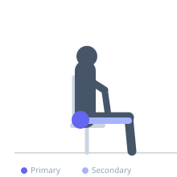
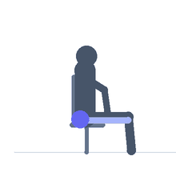

Exercise guide / 90-90 Hip Stretch
90-90 Hip Stretch
The 90-90 hip stretch is a seated floor position in which both hips are bent to 90 degrees in different planes — one leg in external rotation in front and one in internal rotation behind. This position simultaneously loads the internal rotators of the front hip and the external rotators of the rear hip, making it one of the most comprehensive hip mobility exercises available. It addresses the full hip rotation spectrum in a single position.
Primary muscles
gluteus medius
gluteus minimus
gluteus maximus
Secondary muscles
adductor magnus
tensor fasciae latae
Stabilizers
erector spinae
Equipment
No Equipment (Bodyweight)


Starting position
- Sit on the floor. Place the front leg with shin parallel to the front of the mat, knee and hip at 90 degrees. Place the rear leg to the side with the shin parallel to the side of the mat, also at 90 degrees.
Setup
- Use a mat. Beginners may need a folded blanket under the front hip if it rises significantly off the floor.
Steps
- Step 1: Sit on the floor and position both legs in the 90-90 configuration.
- Step 2: Sit tall with the spine upright. Both hips should ideally be in contact with the floor, though the rear hip will be elevated for many beginners.
- Step 3: To stretch the front hip (internal rotation side): hinge the torso forward over the front shin, maintaining a long spine.
- Step 4: To stretch the rear hip (external rotation side): lean toward the rear leg's shin.
- Step 5: Hold each direction 30–90 seconds, then switch sides.
Coaching cues
- Sit tall first — then lean
- Press both hip bones toward the floor
- Breathe wide into the hip that is working
Breathing
- Breathe deeply. Each exhale allows the hips to relax further toward the floor.
Range of motion
- The goal is for both hip bones to eventually touch the floor. This may take weeks to months of consistent practice.
Tempo
- Hold 30–90 seconds per position per side. 2–3 rounds.
Common mistakes
- One hip lifting excessively off the floor, which reduces the hip joint stretch
- Collapsing the torso sideways rather than maintaining spine length
- Moving too quickly between positions
Safety
- If knee discomfort occurs, adjust the degree of hip rotation or avoid if symptomatic
- Do not force either hip to the floor — work at the available range
Training
- mobility: 2–3 reps
- mobility: 1–3 sets
- Rest: {'mobility': 15}